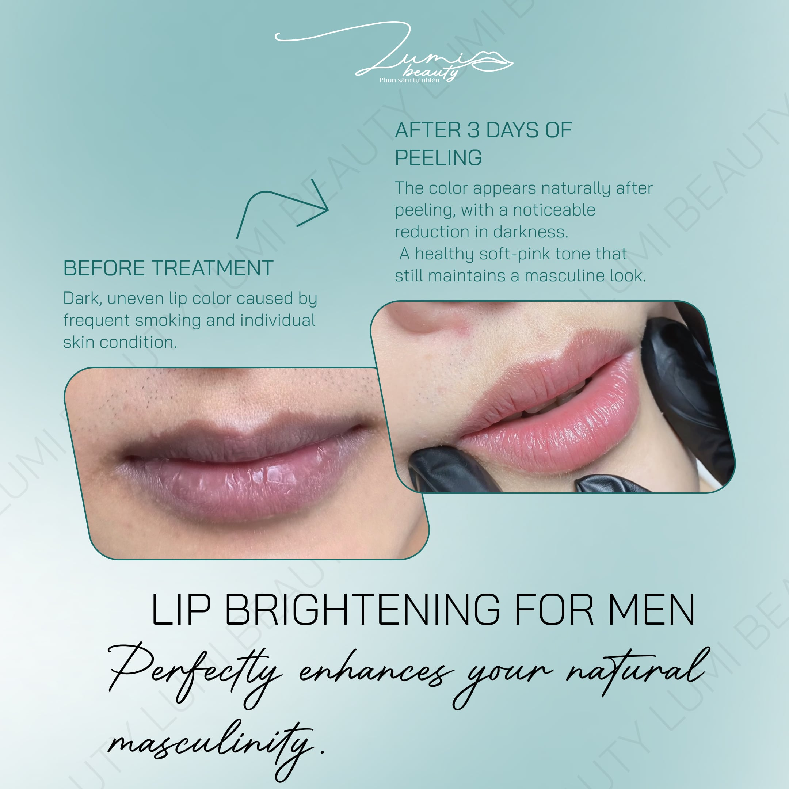

Lip Darkening Removal for Men in Da Nang – Natural – Painless – Fast Recovery
A solution that removes lip darkening in just 1 session. No shine, no redness, maintains perfect masculinity.
🔒 Private 1–1 for Men
📑 Table of Contents
Served Many Male Clients in Da Nang
Medical standard process
Painless
No visible traces
Natural color development


Real Results From Clients

Severely dark lips – improvement after 3 days

Male client – no swelling, no redness

Natural results, maintains masculinity
At Lumi Beauty – PRIVATE 1–1 100%
⭐ PRIVATE 1–1 Service for Men – FRIENDLY & COMFORTABLE
Many men hesitate to get beauty treatments because they fear crowds, being watched, or being judged.
At Lumi Beauty, you will be served with our model:
- 1 client – 1 specialist – 1 private room
- No shared appointments
- No shared rooms
- No waiting
- No one sees you getting the treatment
👤 Face privacy – No video recording if you don't want
We absolutely respect the privacy rights of male clients.
💬 Private 1–1 consultation
Understand your lip condition → recommend the right darkening level → transparent pricing.
🎧 Experience like a personal spa
You can: Listen to music, Close your eyes and relax, No one disturbs you
📌 Privacy Commitment (PRIVATE 1–1) From Lumi Beauty
- ✔ 1 room – 1 client – no sharing
- ✔ No video recording without consent
- ✔ Before/after photos are 100% face-hidden
- ✔ Flexible scheduling to avoid meeting other clients
- ✔ Quiet space – dedicated to male clients
📌 This is why 80% of male clients return & refer friends.
Why Do Men's Lips Darken Easily?
If you drink a lot of coffee, smoke, or frequently go out in the sun — your lips will easily become dull and lose color. Lip darkening removal helps restore natural pigmentation.
Coffee
Tobacco
Sun
Dry lips
What Is Lip Darkening Removal? How Does It Work?
Most men with dark lips have excessive melanin – the pigment that creates dark color on lips – caused by lifestyle habits like coffee, tobacco, sunlight, or long-term dry and cracked lips. Lip darkening removal technology helps treat this melanin area safely and non-invasively.
1️⃣ How does darkening removal technology work?
At Lumi Beauty, we use a technique that introduces light pigment into the epidermis layer of the lips. This technique has 2 effects:
- Break down dark melanin patches so lips gradually brighten and become even in color.
- Neutralize dark pigment with a natural matte color layer, maintaining masculinity (no shine – no redness – no feminine pink).
The entire process is performed on the superficial layer of the lips, no deep intervention, no damage to lip tissue.
2️⃣ Why doesn't this technology cause pain?
- Uses gentle numbing according to medical spa standards.
- Ultra-fine needles, low vibration, no tearing or bleeding of lips.
- Most male clients describe the sensation as just a light touch → suitable even for those afraid of pain.
3️⃣ How much pigment needs treatment? Depends on each client's darkening level
Each client will have different melanin levels:
- Light darkening: Only 1 session is needed for clear results.
- Moderate darkening: 1 treatment session + 1 touch-up session after 45 days to perfect.
- Severe congenital darkening: Requires 2 sessions to achieve the best color.
Pigment assessment will be checked directly by our specialist using eyes and standard lighting to provide the optimal treatment plan.
4️⃣ How is lip darkening removal different from lip PMU?
Many men worry "lip PMU will be shiny or pink like women's". However:
| Criteria | Male lip darkening removal | Lip PMU |
|---|---|---|
| Purpose | Brighten – neutralize color | Completely change lip color |
| Result | Natural – maintains masculinity | Clear color, makeup-like |
| Shine | No shine | May be shinier/redder |
| Suitable for men | ⭐ Very suitable | Less suitable |
→ Lip darkening removal is a specialized solution for men.
5️⃣ How do lips recover after treatment?
- Day 1: Lips are slightly darker because color is still fresh.
- Days 2–3: Light peeling – completely natural.
- Days 4–7: Color brightens, becomes even and clearly visible.
- After 30 days: Completely stable.
No recovery time needed, you can eat and live normally.
⭐ In Summary
Lip darkening removal is a safe – natural – fast-effective method based on melanin neutralization mechanism, does not change lip structure and is extremely suitable for men who want to improve appearance without being "exposed".
Lip Darkening Removal Process for Men – 3 Simple Steps
1️⃣ Consultation & Dark lip examination

Specialist checks lip condition and consults the most suitable color for you.
2️⃣ Numbing & Treatment

Gentle numbing, performing darkening removal with modern technology, painless.
3️⃣ Aftercare

Detailed instructions on how to care for lips after treatment for best results.
Real Lip Darkening Removal Video
Watch a video of lip darkening removal for men at Lumi Beauty
How Long Until Results? Does It Hurt?
- No pain – Gentle numbing
- No swelling – Modern technology
- Light peeling days 2–3 – Natural
- Color stable after 30 days – Long-lasting

Pricing & Special Offers
Level 1 – Light darkening
Original price: 1,500,000 VND
Online discount -20%
1,200,000 VND
🔒 Includes private 1–1 room
- • Light darkening on lip edges/center
- • No severe dark patches
- • Quick treatment – beautiful in 1 session
Level 2 – Moderate darkening
Original price: 1,900,000 VND
Online discount -20%
1,520,000 VND
🔒 Includes private 1–1 room
- • Darkening in 2–3 areas
- • Uneven color patches
- • May need 1 touch-up session
Level 3 – Severe darkening
Original price: 2,500,000 VND
Online discount -20%
2,000,000 VND
🔒 Includes private 1–1 room
- • Congenital or severe darkening
- • Clear dense melanin patches
- • Requires high expertise to treat
Client Reviews
Mr. T.***
"No pain, no swelling at all after treatment. After 3 days, my lips look much better. Thank you Lumi Beauty!"
🔒 Love that it's private, no one sees
Mr. M.***
"Had dark lips since childhood, now much more confident. Professional process, enthusiastic staff."
Frequently Asked Questions
Is it noticeable?
Not noticeable at all. Natural color, maintains perfect masculinity. You can go to work immediately after treatment.
Do I need recovery time?
No recovery time needed. You can resume normal activities immediately after treatment.
How long until it looks good?
Lips start looking good after 3 days. Color is completely stable after 30 days.
Is it suitable for men?
Completely suitable. We specialize in services for men, natural colors, no shine, no redness.
Will lips be shiny?
No shine. Natural lip color, matte, maintains perfect masculinity.
Does it hurt?
No pain. We use gentle numbing, modern process, clients feel very comfortable.
How much does it cost?
Price ranges from 1,500,000 VND - 2,500,000 VND. Currently 20% off for online bookings, includes free lip balm.
How long does it take?
Approximately 60-90 minutes, including consultation and numbing time.
Want to Improve Lip Color? Free Consultation – No Obligation!
Men getting lip darkening removal need privacy. Lumi commits to PRIVATE 1–1. Send lip photos for private specialist assessment.
Contact us now for consultation and booking
🔒 Send private photos – only specialist sees
📍 Address: Vo Quy Huan, FPT City Urban Area, Da Nang, Vietnam
⏰ Business hours: 9:00 - 20:00 (All days of the week)
📞 Hotline: 0364759261